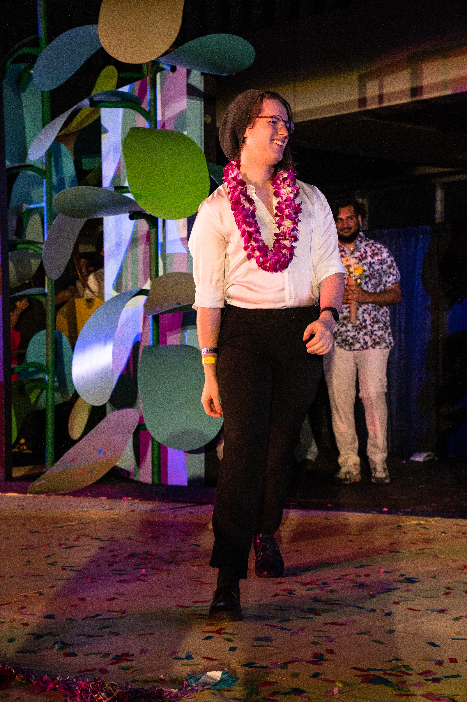

What a wild ride that was.
I'm not quite sure how to put the last four years of my life into a concise post. As with any major period in a person's life, there were ups and downs, successes, failures, and every variation of possibilities in between. Looking back on it, I wouldn't change a thing. It has been one of the greatest experiences of my life, and having a degree directly tied to my dream job is something I will carry for a long time.
Most of all, I'm excited to see what comes next. Right now, my work is in theatre, running tech and sound crew at Laguna Playhouse, and beyond that I'm open. If you're looking for a composer, sound designer, voice actor, or general creative for your projects, reach out. I'll respond as quickly as I can.
